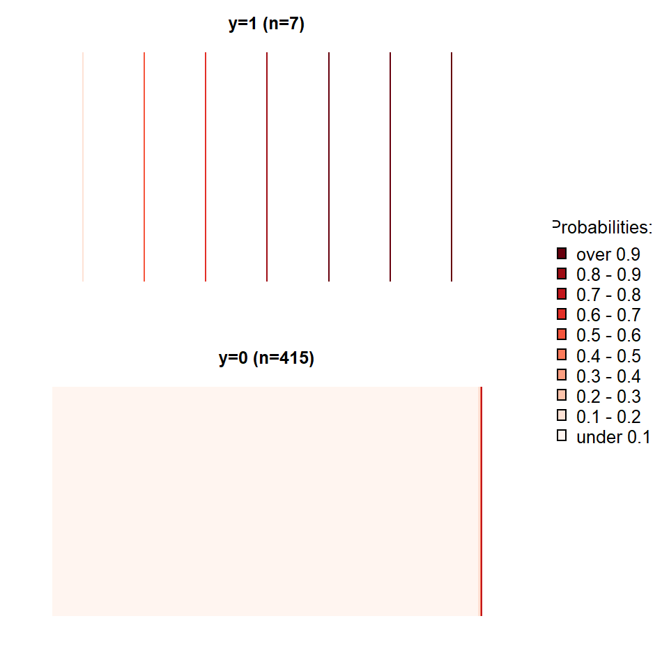
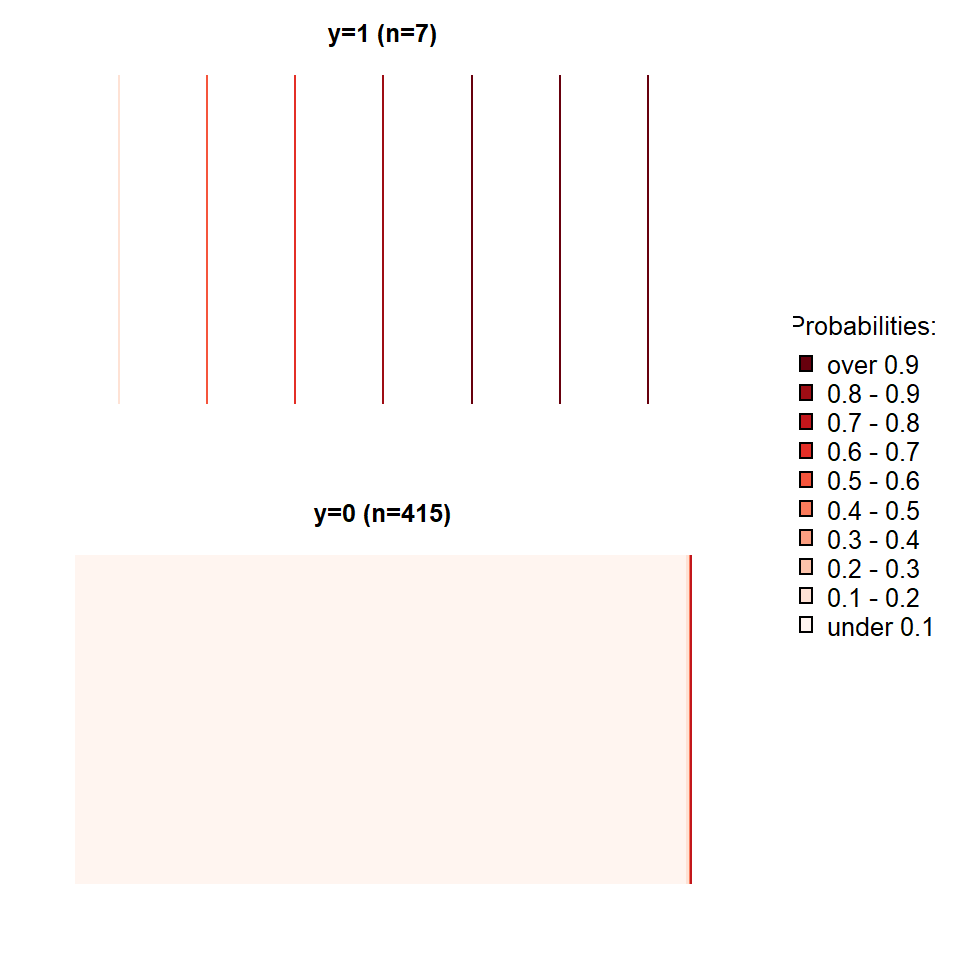

Capítulo 5 Modelos binarios
Lectura de referencia:
- Box-Steffensmeier, J. M., Brady, H. E., & Collier, D. (Eds.). (2008). The Oxford Handbook of Political Methodology (Vol. 10). Oxford Handbooks of Political Science. Oxford: Oxford University Press. Cap. 22 – Discrete Choice Methods.
- Agresti, A. (2007). An Introduction to Categorical Data Analysis, 2nd Ed. Hoboken: Wiley. Cap. 3, 4 y 5 – Generalized Linear Models; Logistic Regression; Building and Applying Logistic Regression Models.
- Greenhill, B., Ward, M. D., & Sacks, A. (2011). The separation plot: A new visual method for evaluating the fit of binary models. American Journal of Political Science, 55(4), 991-1002.
En el capítulo anterior vimos cómo hacer regresiones linarias en R de una manera simple y cubriendo los paquetes más útiles a nuestro alcance. En este capítulo veremos cómo hacer los mismos para variables dependientes dicotómicas. Al igual que en los capítulos previos, no cubriremos aspectos sustanciales a la teoría por tras de cada modelo, ni desglosaremos en detalle las fórmulas. Para ello dejamos tres referencias que van a ayudarte a acompañar lo que describimos si nunca has leído al respecto.
5.1 Conceptos principales
Los modelos para variables dependientes dicotómicas (aquellas que asumen una de dos posibilidades, comúnmente 0 y 1) son utilizados para estimar la probabilidad de ocurrencia de un evento. Es importante remarcar que en inglés existen dos conceptos diferentes que en español y portugués se traducen como una única palabra: probability y likelihood se traducen como probabilidad en diccionarios comúnes (haz la búsqueda así nos crees), si bien la distinción entre ambos es vital para comprender como funcionan los modelos dicotómicos estimados por Máxima Verosimilitud (Maximum Likelihood en inglés). Aunque no vamos a ahondar en su distinción, es importante comprender que una probabilidad se estima a partir de una “población” de la cual conocemos sus “parámetros”, mientras que la verosimilitud recorre el camino inverso, es decir, estima los valores de los parámetros para los cuales el resultado observado mejor se ajusta a ellos (ver Figura 5.1).

Figura 5.1: El camino de doble vía de probabilidad y verosimilitud
Cuando tenemos una variable dependiente dicotómica que queremos modelar, asumimos que la misma tiene una distribución de Bernoulli con una probabilidad que desconocemos. Así, estimamos por medio de Máxima Verosimilitud nuestra probabilidad, hasta ahora desconocida, dada una determinada combinación linear de variables independientes de nuestra elección (ver Figura 5.2). Un muy buen ejercicio para comprender como se estima un parámetro cuya distribución es binomial por medio de Máxima Verosimilitud es ofrecida por [RPubs] (https://rpubs.com/felixmay/MLE).

Figura 5.2: Bernoulli
La Ciencia Política ha hecho extensivo el uso de modelos Logit, por sobre los modelos Probit, en buena medida debido a que los primeros permiten el cálculo de razones de oportunidades (odds ratios). Casi todos los manuales econométricos discuten las diferencias y similitudes entre ambos, las cuales son muchas a los fines prácticos de estimar un modelo. Por ello, siendo que son métodos que derivan en resultados muy similares, sólo utilizaremos Logit en este capítulo. Ambos métodos utilizan funciones de enlace (link functions) diferentes y Logit lleva su nombre debido a que su función está dada por el logaritmo natural de las razones de oportunidad (“log odds”->logit!).
\[ ln(odds) = ln(\frac {p}{1 - p}) \tag{5.1} \]
Despejando los términos podemos calcular, de tal forma que obtenemos.
\[ logit^{-1}(\alpha) = \frac {1}{1+e^{-\alpha}} = \frac {e^\alpha}{1+e^\alpha} \tag{5.2} \]
Donde es la combinación linear de las variables independientes y sus coeficientes. La inversa del Logit nos dará la probabilidad de la variable dependiente ser igual a “1” dada una cierta combinación de valores para nuestras variables independientes. Asi,

Figura 5.3: Inversa del logit
Si profundizas en manuales de econometría, notarás que la función es indefinida en 0 y en 1, es decir, la probabilidad se aproxima infinitamente al límite sin nunca tocarlo.
[falta un buen parrafo para cerrar esta seccion]
5.2 Aplicación en R
Los modelos probabilísticos han ganado enorme preeminencia en la Ciencia Política en los últimos años y es probable que estés buscando una guía aplicada para saber qué hacer y qué no hacer cuando tiene una variable dependiente dicotómica. Para ello vamos a ilustrar un paso a paso en R utilizando como ejemplo la base de datos del libro [“Democracies and Dictatorships in Latin America: Emergence, Survival, and Fall” de Scott Mainwaring y Aníbal Perez-Liñan (2013)] (https://kellogg.nd.edu/democracies-and-dictatorships-latin-america-emergence-survival-and-fall). A lo largo del libro los autores analizan cuales variables ayudan a explicar por qué ocurrieron quiebres democráticos en América Latina durante todo el siglo XX y comienzos del XXI . En el capítulo 4, los autores se preguntan qué factores explican la supervivencia de los regímenes políticos. Si bien prueban varios modelos, algunos logísticos y otros de supervivencia (que están desarrollados en el Capítulo 10), a los fines prácticos haremos un ejemplo muy sencillo para que nos acompañes desde tu computador en el paso a paso. Suponiendo que la variable dependiente asume el valor “1” si el país sufre un quiebre de su régimen político democrático y “0” si no, ¿qué efecto tiene sobre la probabilidad de un quiebre de este tipo ocurrir que un país latinoamericano de mayores poderes constitucionales al poder ejecutivo? Como argumentan los autores, se puede medir estos poderes por medio del índice creado por [Shugart y Carey] (http://www.cambridge.org/gb/academic/subjects/politics-international-relations/comparative-politics/presidents-and-assemblies-constitutional-design-and-electoral-dynamics?format=PB&isbn=9780521429900) de poder presidencial (1992) que los autores incluyen en su base de datos. Así,
datos_mp <- read_stata("00-datos/Cap 7_base_mainwaring_perez.dta")#modelo_1 <- glm(breakdown ~ shugart,
data = datos_mp,
family = binomial("logit"))summary(modelo_1)
##
## Call:
## glm(formula = breakdown ~ shugart, family = binomial("logit"),
## data = datos_mp)
##
## Deviance Residuals:
## Min 1Q Median 3Q Max
## -0.727 -0.295 -0.269 -0.223 2.792
##
## Coefficients:
## Estimate Std. Error z value Pr(>|z|)
## (Intercept) -0.2393 0.9638 -0.25 0.8039
## [ reached getOption("max.print") -- omitted 1 row ]
## ---
## Signif. codes: 0 '***' 0.001 '**' 0.01 '*' 0.05 '.' 0.1 ' ' 1
##
## (Dispersion parameter for binomial family taken to be 1)
##
## Null deviance: 217.84 on 643 degrees of freedom
## Residual deviance: 209.56 on 642 degrees of freedom
## (1572 observations deleted due to missingness)
## AIC: 213.6
##
## Number of Fisher Scoring iterations: 6El coeficiente para la variable shugart está negativamente asociado a la probabilidad de ocurrencia de un quiebre de régimen, y es estadísticamente significativo (p=0.0026). Ahora bien, a diferencia de los modelos por MCO del capítulo anterior, donde podíamos interpretar directamente el efecto de la variable independiente sobre la dependiente a partir de los coeficientes de la regresión, para el caso de regresiones logísticas esto no es tan sencillo. Si partimos de que la función de enlace de logit es el logaritmo de las razones de oportunidades, tenemos que
\[ln(\frac {p}{1 - p}) = \beta_{0} + \beta_{1}x_{1} \tag{5.3}\]
Despejando \(ln\), tenemos que
\[(\frac {p}{1 - p}) = e^{\beta_{0}+\beta_{1}x_{1}} \tag{5.4} \]
Y despejando los términos nuevamente tenemos que
\[\hat{p} = \frac {e^{\beta_{0}+\beta_{1}x_{1}}}{1 + e^{\beta_{0}+\beta_{1}x_{1}}} \tag{5.5}\]
Lo que queremos, entonces, es transformar los coeficientes tal y como los reporta R en una probabilidad asociada a que la variable dependiente asuma el valor “1”. Sabemos que la variable independiente (shugart) es un índice que a mayor valor, mayor concentración de poder del ejecutivo vis a vis el legislativo, por lo tanto el coeficiente de la regresión nos indica que a menor concentración de poder del ejecutivo, mayor la probabilidad de un quiebre de régimen. La muestra del libro cubre 20 países latinoamericanos entre 1900 y 2010, y el índice oscila de un mínimo de 5 (Haití, para varios años) a un máximo de 25 (Brasil en 1945) (ver Figura 5.4 ¿Cómo puedo saber en qué magnitud se afecta la probabilidad de un quiebre democrático si el nivel de concentración de poder del ejecutivo pasa de un puntaje de 5 (mínimo) a uno de 25 (máximo) cuando no controlamos por nada más en la regresión?
attach(datos_mp)
qplot(shugart, geom="histogram")
## `stat_bin()` using `bins = 30`. Pick better value with `binwidth`.
## Warning: Removed 1054 rows containing non-finite values (stat_bin).
Figura 5.4: Histograma Shugart
Para ello podemos reemplazar los valores de nuestra última fórmula, en la que hemos aislado en el lado izquierdo de la fórmula a \(\hat {p}\). Primero debemos calcular cuál es la probabilidad de sufrir un quiebre de régimen en un nivel de Shugart de 5 y en un nivel 25, respectivamente, para luego calcular la diferencia. Así tenemos que
\[\hat{p} = \frac {e^{(0+(-0.019*5))}}{1 + e^{(0+(-0.019*5))}} \tag{5.6}\]
Notarás que el valor correspondiente al intercepto es igual a 0 pues ese coeficiente no ha resultado estadísticamente significativo. Sabemos que para un índice de Shugart y Carey de 5, luego de hacer el cálculo en la fórmula arriba, la probabilidad es igual a 0.47 o 47%. Si repetimos el proceso para un valor de Shugart de 25 la probabilidad cae a 38%. Con las probabilidades podemos calcular oportunidades, que son simplemente \(\frac {p}{1-p}\). De esta manera, la oportunidad (odd en inglés) para un valor 5 del índice de Shugart y Carey es de 0.90 mientras que para un índice de Shugart y Carey de 25 es de 0.62. La utilidad de las oportunidades es que permite calcular razones de probabilidades (odds ratios). ¿Cuál es la gracia de calcular una razón de probabilidades? Veamos. Si calculo la probabilidad de un cambio en el índice de Shugart y Carey de 23 a 24, la magnitud será diferente a si calculamos un cambio en la probabilidad si el índice pasa de 12 a 13, por ejemplo. Es decir, los efectos de la variable independiente sobre la probabilidad de la variable dependiente ocurrir no son lineares (recuerde la función en “S” de la Figura 5.3). Por el contrario, las razones de probabilidades tienen la propiedad de poder reflejar cambios independientemente de la curvatura de la función, es decir, son cambios “constantes”. Así, podemos expresar el efecto de la variable sin tener que especificar un valor determinado para ella. Siendo que los modelos Probit y Logit generan resultados muy similares, y debido a que los modelos Logit permiten el cálculo de razones de probabilidad, la que la literatura de Ciencia Política se ha inclinado hacia esta opción. Veamos cómo sería el cálculo de razones de probabilidad siguiendo el ejemplo que acabamos de crear con la base de datos de Mainwaring y Perez-Liñan. Dijimos que la oportunidad está dada por \(\frac {p}{1 - p}\). Una razón de oportunidades se expresaría, entonces, como \(\frac {\frac {p_1}{1-p_1}}{\frac {p_2}{1-p_2}}\). Supongamos que Chile en el año 1992 tenía un índice de Shugart de 15, y que en el año 1993 ese índice subió a 16 (éstos no son valores reales).
\[ Pr(quiebre democr\'atico){_{Chile,1992}} = \frac {e^{(0+(-0.019*15))}}{1 + e^{((0+(-0.019*15))}} = 0.42\] \[ Pr(quiebre democr\'atico){_{Chile,1993}} = \frac {e^{(0+(-0.019*16))}}{1 + e^{(0+(-0.019*16))}} = 0.43\]
La probabilidad difiere poco y cae en un 2.4% lo que parece ser un efecto pequeño. La razón de oportunidades se calcula como el cociente de ambas oportunidades, así:
\[\frac {0.42}{0.43}=0.97\]
De esta manera, toda razón de oportunidades mayor a 1 expresa un cambio positivo, mientras que todo valor menor a 1 (entre 0 y 1) representa un cambio negativo en las probabilidades estimadas. Si hiciéramos el mismo ejercicio para otros valores del índice de Shugart y Carey, por ejemplo, un cambio de 3 a 4 o de 23 a 24, el cociente de las oportunidades daría 0.97.
SERIA BUENO CREAR UN BLOCK CON UN LAPIZ EN VEZ DE UN LIBRO, PARA USAR EN COSAS ASÍ, COLOR GRISAhora, haz el cálculo para el valor real de Chile en 1992 y 1993 como práctica, te esperamos.
R ofrece paquetes para que este análisis sea fácil de hacerse. Podemos visualizar fácilmente los cocientes de oportunidades utilizando el paquete sjPlot. Podemos calcular probabilidades predichas, y además podemos hacer tests para saber la capacidad explicativa de nuestros modelos. Utilizando la misma base de datos haremos un ejemplo de una rutina típica, que puedes recrear en casa utilizando tus propios datos. Los pasos a seguir son (a) estimar los modelos, (b) crear tablas formateadas para pegar en nuestros procesadores de texto, (c) crear figuras para visualizar la magnitud de los coeficientes por medio de cociente de oportunidades, (d) visualizar probabilidades predichas para variables de interés, (e) calcular capacidad explicativa de los modelos (porcentaje correctamente predicho, AIC, BIC, curvas ROC, Brier scores o separation plots, que explicaremos a continuación). Cuando uno trabaja con una variable dependiente binaria, y lo que quiere es rodar algunos modelos logísticos para incorporar a su trabajo, primero es recomendable utilizar Pacman. pacman es un paquete de R que hace mucho más fácil trabajar con otros paquetes, pues permite cargar todos al mismo tiempo. Comencemos por cargarlo:
if (!require("pacman"))
install.packages("pacman"); library(pacman) Para que sea simple utilizar la función pacman, recomendamos añadir library(pacman) a su archivo de .Rprofile, para que se cargue automáticamente cada vez que abra R Studio. De esta manera no habrá que ejecutarlo cada vez que abra R Studio. La principal gracia de pacman es su función p_load, que nos permite cargar varios paquetes en un solo comando y, si nos los tenemos instalados, lo hace por nosotros (en el siguiente paso la utilizaremos). Si no tienes instalados los siguientes paquetes, p_load los instalará por ti. Si nos has acompañado desde los capítulos anteriores, este paso te resultará familiar.
p_load(haven, # parte del tidyverse, para cargar bases de datos en formatos foráneos
verification,
janitor, # nos da la función tabyl(), para hacer tablas tidy
sjPlot,
stargazer, # nos ayuda a hacer tablas de modelos de regresión
tidyverse,
pscl,
separationplot
)5.3 Estimar los modelos
¿Recuerde el ADP? Una de las funciones que hemos facilitado es la de creación de tablas editables para artículos académicos utilizando la función stargazer. Si utilizas nuestro paquete te ahorrarás muchos pasos que son engorrosos.
library(stargazer)
source("00-funs/ADP.R")Por medio de stargazer podemos exportar nuestras tablas formateadas en html para poder incorporarlas en nuestros artículos directamente. Para ejemplificar este paso lo que haremos es agregar al modelo 1 dos modelos más: El modelo 2 tendrá como variables independientes al índice de Shugart y Carey más la variable age que mide en años la edad del régimen político. qplot(age, geom=“histogram”)
modelo_2 <- glm(breakdown ~ shugart+age,
data = datos_mp,
family = binomial("logit"))summary(modelo_2)
##
## Call:
## glm(formula = breakdown ~ shugart + age, family = binomial("logit"),
## data = datos_mp)
##
## Deviance Residuals:
## Min 1Q Median 3Q Max
## -0.734 -0.302 -0.266 -0.218 2.828
##
## Coefficients:
## Estimate Std. Error z value Pr(>|z|)
## (Intercept) -0.22220 0.96764 -0.23 0.8184
## [ reached getOption("max.print") -- omitted 2 rows ]
## ---
## Signif. codes: 0 '***' 0.001 '**' 0.01 '*' 0.05 '.' 0.1 ' ' 1
##
## (Dispersion parameter for binomial family taken to be 1)
##
## Null deviance: 217.84 on 643 degrees of freedom
## Residual deviance: 209.52 on 641 degrees of freedom
## (1572 observations deleted due to missingness)
## AIC: 215.5
##
## Number of Fisher Scoring iterations: 6El modelo 3 agrega a las dos variables del modelo 2 una tercer variable llamada fh que corresponde al Freedom House score de democracia.
qplot(fh, geom="histogram")
## `stat_bin()` using `bins = 30`. Pick better value with `binwidth`.
## Warning: Removed 1436 rows containing non-finite values (stat_bin).
Figura 5.5: Histograma FH
modelo_3 <- glm(breakdown ~ shugart+age+fh,
data = datos_mp,
family = binomial("logit"))
## Warning: glm.fit: fitted probabilities numerically 0 or 1 occurredsummary(modelo_3)
##
## Call:
## glm(formula = breakdown ~ shugart + age + fh, family = binomial("logit"),
## data = datos_mp)
##
## Deviance Residuals:
## Min 1Q Median 3Q Max
## -1.7864 -0.0008 -0.0001 0.0000 1.8940
##
## Coefficients:
## Estimate Std. Error z value Pr(>|z|)
## (Intercept) 15.360 6.584 2.33 0.020 *
## [ reached getOption("max.print") -- omitted 3 rows ]
## ---
## Signif. codes: 0 '***' 0.001 '**' 0.01 '*' 0.05 '.' 0.1 ' ' 1
##
## (Dispersion parameter for binomial family taken to be 1)
##
## Null deviance: 71.271 on 421 degrees of freedom
## Residual deviance: 12.113 on 418 degrees of freedom
## (1794 observations deleted due to missingness)
## AIC: 20.11
##
## Number of Fisher Scoring iterations: 12Una vez creados los tres modelos de interés, los agrupamos en una lista por medio de la función list.
mp_modelos <- list(modelo_1,
modelo_2,
modelo_3)Para exportar la tabla a html demos definir la opción type y un nombre para el archivo html en la opción out. Así el comando sería
stargazer_easy_binary(mp_modelos, type = “html”, # OJO out = “output/tabla_mp_modelos.htm”, # OJO report = “vct*“, title =”Modelos 1-3 en base a Mainwaring y Perez Liñan (2013)“, align = TRUE, dep.var.labels = c(”Quiebre de régimen“), covariate.labels =c (”Indice de Shugart & Carey (1992)“,”Edad del régimen“,”Freedom House“), no.space = TRUE)
A simple vista observamos que shugart deja de ser estadísticamente significativa cuando controlamos por fh y, además, ésta pasa a ser la única variable estadísticamente significativa en el tercer modelo. Vemos como el número de observaciones cae significativamente al incluir la variable fh lo que hace difícil comparar los modelos. Entonces al obtener una tabla como la que acabamos de crear tenemos dos desafíos: comparar los modelos para saber cuál tiene mejor ajuste, y saber si la magnitud de los efectos es substantiva desde un punto de vista científico (por ejemplo, si la variable fh resulta estadísticamente significativa pero la probabilidad de un quiebre de régimen cae en 0.03% si un país pasa del peor score de fh al mejor, entonces diríamos que, a pesar de estadísticamente significativa, nuestra variable carece de significancia substantiva). Jane Miller hace mucho énfasis en su [libro] (http://www.press.uchicago.edu/ucp/books/book/chicago/C/bo15506942.html) respecto a la diferencia entre significancia estadística y significancia substantiva: no por ser una variable significativa estadísticamente la magnitud del efecto será el esperado. Para explorar las magnitudes de los coeficientes vamos a concentrarnos en el tercer modelo. Una tabla individual, podrán anticipar, se haría así:
stargazer_easy_binary(modelo_3, type = “text”, report = “vct*“, title =”Modelo 3 en base Mainwaring y Perez Liñan (2013)“, )
Comencemos reemplazando los coeficientes en la tabla por cocientes de oportunidades. Noten cómo el procedimiento es muy similar al de reemplazar errores estándar:
stargazer_easy_binary(modelo_3, type = “text”, report = “vct*“, title =”Modelo 3 en base Mainwaring y Perez Liñan (2013), odds ratios“, coef = list(exp(modelo_3$coefficients)))
5.4 Visualización de resultados
Podemos representar visualmente lo anterior con la función sjp.glm() del paquete sjPlot:
sjp.glm(modelo_3,
show.ci = T)
## Warning: glm.fit: fitted probabilities numerically 0 or 1 occurred
## Warning: glm.fit: fitted probabilities numerically 0 or 1 occurred
## Warning: glm.fit: fitted probabilities numerically 0 or 1 occurred
## Warning: glm.fit: fitted probabilities numerically 0 or 1 occurred
## Warning: glm.fit: fitted probabilities numerically 0 or 1 occurred
## Warning: glm.fit: fitted probabilities numerically 0 or 1 occurred
## Warning: glm.fit: fitted probabilities numerically 0 or 1 occurred
## Warning: glm.fit: fitted probabilities numerically 0 or 1 occurred
## Warning: glm.fit: fitted probabilities numerically 0 or 1 occurred
## Warning: glm.fit: fitted probabilities numerically 0 or 1 occurred
## Warning: glm.fit: fitted probabilities numerically 0 or 1 occurred
## Warning: glm.fit: fitted probabilities numerically 0 or 1 occurred
## Warning: glm.fit: fitted probabilities numerically 0 or 1 occurred
## Warning: glm.fit: fitted probabilities numerically 0 or 1 occurred
## Warning: glm.fit: fitted probabilities numerically 0 or 1 occurred
## Warning: glm.fit: fitted probabilities numerically 0 or 1 occurred
## Warning: glm.fit: fitted probabilities numerically 0 or 1 occurred
## Warning: glm.fit: fitted probabilities numerically 0 or 1 occurred
## Warning: glm.fit: fitted probabilities numerically 0 or 1 occurred
## Warning: glm.fit: fitted probabilities numerically 0 or 1 occurred
## Warning: glm.fit: fitted probabilities numerically 0 or 1 occurred
## Warning: glm.fit: fitted probabilities numerically 0 or 1 occurred
## Warning: glm.fit: fitted probabilities numerically 0 or 1 occurred
## Warning: glm.fit: fitted probabilities numerically 0 or 1 occurred
## Warning: glm.fit: fitted probabilities numerically 0 or 1 occurred
## Warning: glm.fit: fitted probabilities numerically 0 or 1 occurred
## Warning: glm.fit: fitted probabilities numerically 0 or 1 occurred
## Warning: glm.fit: fitted probabilities numerically 0 or 1 occurred
## Warning: glm.fit: fitted probabilities numerically 0 or 1 occurred
## Warning: glm.fit: fitted probabilities numerically 0 or 1 occurred
## Warning: glm.fit: fitted probabilities numerically 0 or 1 occurred
## Warning: glm.fit: fitted probabilities numerically 0 or 1 occurred
## Warning: glm.fit: fitted probabilities numerically 0 or 1 occurred
## Warning in sjp.glm(modelo_3, show.ci = T): Exp. coefficients and/or
## exp. confidence intervals may be out of printable bounds. Consider using
## `axis.lim` argument!
## Warning: Removed 1 rows containing missing values (geom_errorbar).
Figura 5.6: Odds ratios del Modelo 3, en base a Mainwaring y Pérez Liñán (2013)
Esta figura es mucho más intuitiva de leerse que los coeficientes de las tablas. En muchas ocasiones es preferible utilizar este tipo de figuras a tablas. La [tendencia] (https://www.princeton.edu/~jkastell/Tables2Graphs/graphs.pdf) en la disciplina es a la de prescindir de tablas cuando estas no sean esenciales. La ciencia política no prestó demasiada atención a la presentación de resultados por medio de figuras hasta hace unas dos décadas, y hoy en día con software como R es muy simple de hacer. Un precursor en la disciplina fue [Edward Tufte] (http://pages.mtu.edu/~hcking/Tufte_hKing.pdf). Con el argumento type = "slope" en sjp.glm() podemos apreciar cómo es la relación entre cada variable independiente y la variable dependiente, cuando las demás variables independientes están en 0.
sjp.glm(modelo_3,
type = "slope",
show.ci = TRUE)
Figura 5.7: Probabilidades predichas (con el resto de las variables en 0) del Modelo 3, en base a Mainwaring y Pérez Liñán (2013)
Con el argumento type = "pred" en sjp.glm() podemos apreciar cómo es la relación entre cada variable independiente y la variable dependiente, cuando las demás variables independientes están en sus medias
sjp.glm(modelo_3,
type = "pred",
show.ci = TRUE,
vars = "fh",
title = "Modelo 3 en base Mainwaring y Perez Liñan (2013), pr. predichas con otras variables en sus medias")
Figura 5.8: Probabilidades predichas (con el resto de las variables en sus medias) del Modelo 3, en base a Mainwaring y Pérez Liñán (2013)
Con el argumento type = "eff" en sjp.glm() podemos calcular efectos marginales de cada variable independiente en relación a la variable dependiente, dejando las demás variables independientes están en sus medias. El efecto marginal es el incremento previsto de la variable dependiente asociada al aumento de una unidad en una de las variables independientes, manteniendo las otras constantes. En la regresión lineal, es solo el parámetro beta. En la regresión logística, depende del valor de la variable independiente.
sjp.glm(modelo_3,
type = "eff",
show.ci = TRUE,
title = "Modelo 3 en base Mainwaring y Perez Liñan (2013), efectos marginales")
Figura 5.9: Efectos marginales del Modelo 3, en base a Mainwaring y Pérez Liñán (2013)
5.5 Ajuste de los modelos
Una vez que uno ha analizado la significancia substantiva de los modelos por medio de figuras analizando las probabilidades predichas y los efectos marginales, podemos explorar el ajuste de los modelos. Así como en MCO podemos usar el \(R^2\) y el Mean Root Square Error ,existe una serie de estadísticas diseñadas para saber cuál de los modelos logísticos tiene mejor fit.
stargazer_easy_binary(mp_modelos, type = “text”, report = “vct*“, title =”Modelos 1-3 en base Mainwaring y Perez Liñan (2013)" )
El wrapper que hemos creado ya nos provee de varios indicadores de ajuste, que también podemos calcular por separado:
5.6 Bondad de ajuste
5.6.1 \(Pseudo-R^2\)
Para entender como e interpreta el Pseudo-\(R^2\) (normalmente se usa el de McFadden) es importante compreender como se diferencia de um \(R^2\) por MCO (usar este link para R2 em el cap de OLS http://setosa.io/ev/ordinary-least-squares-regression/). La fórmula, en este caso es \(Pseudo-R^2= 1-\frac {ln \hat{L}(Modelo completo)}{ln \hat{L}(Modelo sólo con intercepto)}\) Donde \(\hat{L}\) es la verosimilitud estimada por el modelo. Básicamente, lo que la fórmula está haciendo es comparar el modelo con todas nuestras covariables al modelo que apenas tiene el intercepto, para ver cuanto mejora la capacidad explicativa del mismo. Como \(L\) está entre 0 y 1, su log es menor o igual a 0. Así, cuanto menor la razón, mayor la diferencia entre el modelo elegido y el modelo con apenas el intercepto.
pR2(modelo_1)[["McFadden"]]
## [1] 0.43
pR2(modelo_2)[["McFadden"]]
## [1] 0.43
pR2(modelo_3)[["McFadden"]]
## [1] 0.97También se podría implementar un \(Pseudo-R^2\) ajustado, es decir, una versión que penalice por cantidad de covaraibles. Siendo que \(c\) es cantidad de covariables, tenemos que \(Pseudo-R^2= 1-\frac {ln \hat{L}(Modelo completo)-c}{ln \hat{L}(Modelo sólo con intercepto)}\)
5.6.2 AIC
El Akaike Information Criterion (AIC) también usa información de \(ln(\hat {L})\) como el \(Pseudo-R^2\). El AIC lo que hace es medir la “distancia” que existe entre los verdaderos parámetros y los estimadores del modelo, por medio de la distancia de Kullback-Leibler. Por ello, cuanto menor esta distancia, mejor el modelo. Es muy útil a la hora de comparar diferentes modelos. Se calcula como \(AIC = 2p-2ln(\hat {L})\) Donde \(p\) es la cantidad de regresores incluyendo al intercepto, y \(\hat{L}\) es la verosimilitud estimada por el modelo.
AIC(modelo_1)
## [1] 214
AIC(modelo_2)
## [1] 216
AIC(modelo_3)
## [1] 205.6.3 BIC
BIC (Bayesian information criterion) al igual que AIC es un criterio de comparación de modelos según su ajuste. A los fines prácticos, y para no entrar en las diferencias entre AIC y BIC, es importante saber que BIC penaliza de manera más rigurosa que AIC la complejidad del modelo, siendo que su fórmula es \(BIC=ln(n)p-2ln(\hat {L})\) donde agrega a la formula \(n\) que es el número de observaciones en la muestra.
BIC(modelo_1)
## [1] 222
BIC(modelo_2)
## [1] 229
BIC(modelo_3)
## [1] 365.6.4 Brier Score
Ésta es otra medida de ajuste. Cuanto más próximo el score de Brier a 0, mejor el ajuste del modelo. En general uno no utiliza todas (AIC, BIC, Brier, etc) sino que elige dos o tres que sean de su agrado. El Brier se utiliza poco en ciencia política, pero es bastante común en epidemiología. Creemos que situaciones en que se quiere “castigar” mucho las predicciones erróneas, ésta es una alternativa ideal ya que su fórmula viene dada por \(B=frac\{1}{N} \sum(\hat{p} - x)^2\) Donde \(N\) es el número de observaciones, \(\hat{p}\) es la probabilidad predicha para cada observación, y \(x\) es el valor real de la observación en nuestra base de datos. El score es el promedio para todas las observaciones de la muestra. ¿Cuál de los tres modelos tiene menor score?
brier_score(modelo_1) brier_score(modelo_2) brier_score(modelo_3)
5.6.5 Porcentaje de predicciones correctas
Para entender el porcentaje de predicciones correctas en un modelo es importante tener en claro que un modelo produce cuatro combinaciones posibles:
 Toda observación será clasificada como “correcta” si corresponde a la casilla superior izquierda (verdadero positivo) o a la inferior derecha (verdadero negativo). El porcentaje de observaciones que pertenecen a estas dos casillas determina el porcentaje de predicciones correctas en el modelo. Como criterio estándar, si la probabilidad estimada para una observación es mayor o igual a 50% se estima que es una probabilidad positiva, y si es menor a 50% será una probabilidad negativa.
Toda observación será clasificada como “correcta” si corresponde a la casilla superior izquierda (verdadero positivo) o a la inferior derecha (verdadero negativo). El porcentaje de observaciones que pertenecen a estas dos casillas determina el porcentaje de predicciones correctas en el modelo. Como criterio estándar, si la probabilidad estimada para una observación es mayor o igual a 50% se estima que es una probabilidad positiva, y si es menor a 50% será una probabilidad negativa.
corr_pred_binary(modelo_1, type = “prop”) corr_pred_binary(modelo_2, type = “prop”) corr_pred_binary(modelo_3, type = “prop”)
5.6.6 ROC plot
Las curvas de ROC tienen la ventaja de no definir un límite arbitrario a partir del cual se decide si la observación ha sido correcta o incorrectamente clasificada. Su desventaja es que es una figura extra que deberemos incluir en nuestro artículo (¿quizás pensemos en un apéndice?). Para interpretar estas figuras, lo que nos interesa es el área debajo de la curva. A mayor el área bajo la curva, mejor el ajuste del modelo. Si quieren leer más al respecto, el área conforma un score que se denomina AUC score (que viene de “Area Under the Curve”). Vamos a construirlo con la función roc.plot() del paquete verification
roc.plot(x = modelo_1$y, # tienen el mismo x!
pred = cbind(predict.glm(modelo_1, type="response"),
predict.glm(modelo_2, type="response"),
predict.glm(modelo_3, type="response")),
threshold = seq(0,1, 0.1),legend = T, show.thres = F,
xlab="Ratio de falsas alarmas",
ylab="Ratio de aciertos",
leg.text = c("Modelo 1","Modelo 2", "Modelo 3"),
main="ROC plot - Modelos 1-3 en base a Mainwaring y Perez Liñan (2013)")
## Warning in cbind(predict.glm(modelo_1, type = "response"),
## predict.glm(modelo_2, : number of rows of result is not a multiple of
## vector length (arg 3)
Figura 5.10: Roc Plot de nuestros modelos.
En el eje vertical tenemos la sensibilidad del modelo mientras que en el eje horizontal tenemos (1-especificidad) del modelo. La sensibilidad es la razón entre los verdaderos positivos (o sea, aquellas observaciones predichas como “1”, que realmente eran “1” en la base de datos), y la suma de los verdaderos postivos más los falsos negativos (aquellos preichos como “0” que en verdad eran “1”). La especificidad es la razón entre los verdaderos negativos (aquellas observaciones predichas como “0” que eran “0” en la base de datos) y la suma de los falsos positivos (aquellas observaciones predichas como “1” que en verdad eran “0”) sumado a los verdaderos negativos.
5.6.7 Separation plots
Nótese cómo ocupamos el argumento type = "bands", en tanto nuestro n es muy alto.
separationplot(pred = predict.glm(modelo_1, type = "response"),
actual = as.vector(modelo_1$y),
type = "bands",
newplot = F,
heading = "Separation plot - Modelo 1 en base a Mainwaring y Perez Liñan (2013)")
separationplot(pred = predict.glm(modelo_3, type = "response"),
actual = as.vector(modelo_3$y),
type = "bands",
newplot = F,
heading = "Separation plot - Modelo 3 en base a a Mainwaring y Perez Liñan (2013)") 

Figura 5.11: Separation plots de nuestros modelos.